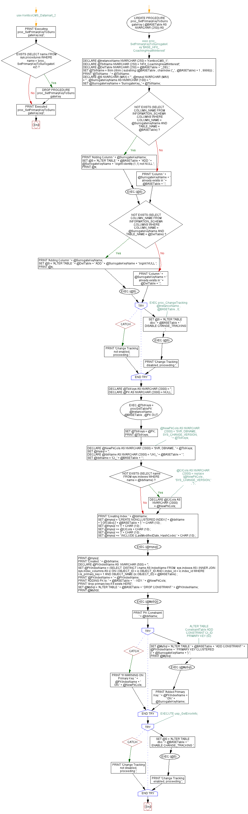

<a href="proc_SetPrimaryKeyToSurrogateKey.png"></a>
--use KenticoCMS_Datamart_2 ; GO PRINT 'Executing proc_SetPrimaryKeyToSurrogateKey.sql'; GO IF EXISTS (SELECT name FROM sys.procedures WHERE name = 'proc_SetPrimaryKeyToSurrogateKey') BEGIN DROP PROCEDURE proc_SetPrimaryKeyToSurrogateKey END; GO -- exec proc_SetPrimaryKeyToSurrogateKey 'BASE_HFit_CoachingHealthInterest' CREATE PROCEDURE proc_SetPrimaryKeyToSurrogateKey ( @BASETable AS NVARCHAR (250)) AS BEGIN DECLARE @InstanceName NVARCHAR (250) = 'KenticoCMS_1'; DECLARE @TblName NVARCHAR (250) = 'HFit_CoachingHealthInterest'; DECLARE @DelTable NVARCHAR (250) = @BASETable + '_DEL'; SET @TblName = ltrim (rtrim ( substring (@BASETable , charindex ('_' , @BASETable) + 1 , 9999))) ; PRINT '@TblName : ' + @TblName; DECLARE @S NVARCHAR (MAX) = '' , @mysql NVARCHAR (MAX) = '' , @SurrogateKeyName AS NVARCHAR (100) = ''; SET @SurrogateKeyName = 'SurrogateKey_' + @TblName; IF NOT EXISTS (SELECT COLUMN_NAME FROM INFORMATION_SCHEMA.COLUMNS WHERE COLUMN_NAME = @SurrogateKeyName AND TABLE_NAME = @BASETable) BEGIN PRINT 'Adding Column ' + @SurrogateKeyName; SET @S = 'ALTER TABLE ' + @BASETable + ' ADD ' + @SurrogateKeyName + ' bigint identity (1,1) not NULL '; PRINT @s; EXEC (@S) ; END; ELSE BEGIN PRINT 'Column ' + @SurrogateKeyName + ' already exists in ' + @BASETable + '.'; END; IF NOT EXISTS (SELECT COLUMN_NAME FROM INFORMATION_SCHEMA.COLUMNS WHERE COLUMN_NAME = @SurrogateKeyName AND TABLE_NAME = @DelTable) BEGIN PRINT 'Adding Column ' + @SurrogateKeyName; SET @S = 'ALTER TABLE ' + @DelTable + ' ADD ' + @SurrogateKeyName + ' bigint NULL '; PRINT @s; EXEC (@S) ; END; ELSE BEGIN PRINT 'Column ' + @SurrogateKeyName + ' already exists in ' + @DelTable + '.'; END; -- EXEC proc_ChangeTracking @InstanceName , @BASETable , 0; BEGIN TRY SET @S = 'ALTER TABLE dbo.' + @BASETable + ' DISABLE CHANGE_TRACKING '; EXEC (@S) ; PRINT 'Change Tracking disabled, proceeding.'; END TRY BEGIN CATCH PRINT 'Change Tracking not enabled, proceeding.'; END CATCH; DECLARE @TblKeys AS NVARCHAR (2000) = ''; DECLARE @PK AS NVARCHAR (2000) = NULL; EXEC @TblKeys = procGetTablePK @InstanceName , @BASETable , @PK OUT; SET @TblKeys = @PK; PRINT @TblKeys; DECLARE --@NewPkCols AS NVARCHAR (2000) = 'SVR, DBNAME, SYS_CHANGE_VERSION, ' + @TblKeys; @NewPkCols AS NVARCHAR (2000) = 'SVR, DBNAME, ' + @TblKeys; SET @mysql = ''; DECLARE @IdxName AS NVARCHAR (2000) = 'UKI_' + @BASETable + ' '; SET @IdxName = 'CI_' + @BASETable + ' '; IF NOT EXISTS (SELECT name FROM sys.indexes WHERE name = @IdxName) BEGIN DECLARE --@CICols AS NVARCHAR (2000) = replace (@NewPkCols , 'SYS_CHANGE_VERSION,' , '') ; @CICols AS NVARCHAR (2000) = @NewPkCols; END; BEGIN PRINT 'Creating Index: ' + @IdxName; SET @mysql = 'CREATE NONCLUSTERED INDEX [' + @IdxName + '] ON [dbo].[' + @BASETable + '] ' + CHAR (10) ; SET @mysql += '(' + CHAR (10) ; SET @mysql += @CICols + CHAR (10) ; SET @mysql += ')' + CHAR (10) ; SET @mysql += ' INCLUDE (LastModifiedDate, HashCode) ' + CHAR (10) ; EXEC (@mysql) ; PRINT @mysql; PRINT 'Created: ' + @IdxName; END; DECLARE @PKIndexName AS NVARCHAR (500) = ''; SET @PKIndexName = (SELECT DISTINCT i.name AS IndexName FROM sys.indexes AS i INNER JOIN sys.index_columns AS ic ON i.OBJECT_ID = ic.OBJECT_ID AND i.index_id = ic.index_id WHERE i.is_primary_key = 1 AND OBJECT_NAME (ic.OBJECT_ID) = @BASETable) ; PRINT '@PKIndexName = ' + @PKIndexName; PRINT 'ADDING PK to: ' + @BASETable + ' - KEY: ' + @NewPkCols; PRINT 'drop primary key if it exists HERE'; SET @MySql = 'ALTER TABLE ' + @BASETable + ' DROP CONSTRAINT ' + @PKIndexName; PRINT @MySQl; EXEC (@MySQl) ; PRINT 'PK Constraint: ' + @IdxName; BEGIN TRY --ALTER TABLE ConstraintTable ADD CONSTRAINT Ct_ID PRIMARY KEY (ID) SET @MySql = 'ALTER TABLE ' + @BASETable + ' ADD CONSTRAINT ' + @PKIndexName + ' PRIMARY KEY CLUSTERED (' + @SurrogateKeyName + ') '; PRINT @MySql; EXEC (@MySql) ; PRINT 'Added Primary Key: ' + @PKIndexName + ' ON ' + @SurrogateKeyName; END TRY BEGIN CATCH PRINT '!!! WARNING ON : Primary Key: ' + @PKIndexName + ' ON ' + @NewPkCols; --EXECUTE usp_GetErrorInfo; END CATCH; BEGIN TRY SET @S = 'ALTER TABLE dbo.' + @BASETable + ' ENABLE CHANGE_TRACKING '; EXEC (@S) ; PRINT 'Change Tracking enabled, proceeding.'; END TRY BEGIN CATCH PRINT 'Change Tracking not disabled, proceeding.'; END CATCH; END; GO PRINT 'Executed proc_SetPrimaryKeyToSurrogateKey.sql'; GO
Hide code
Visustin flow chart for T-SQL